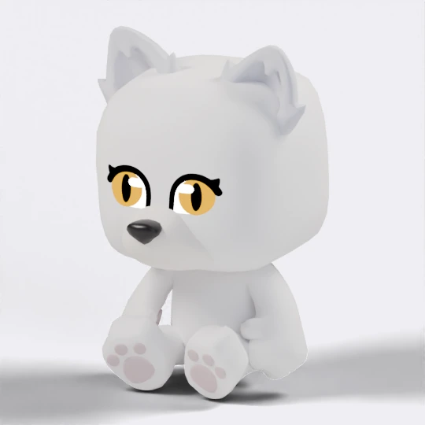
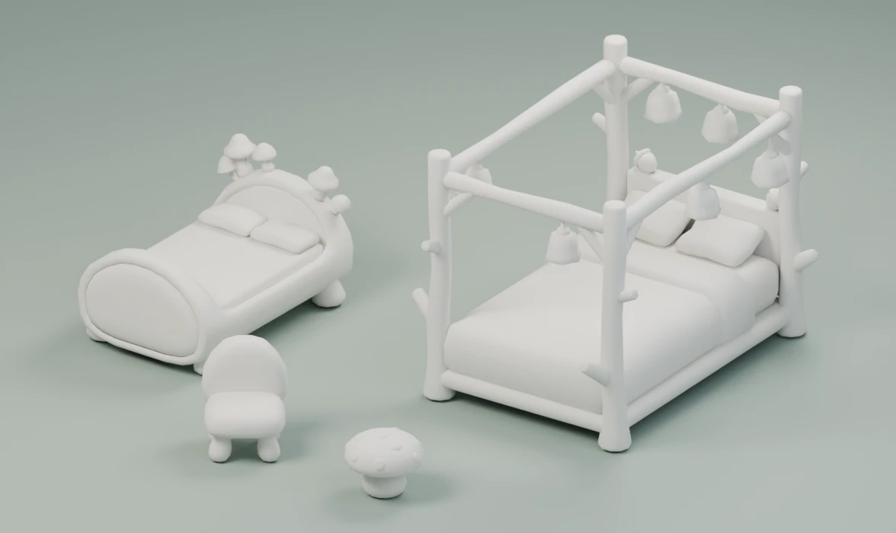
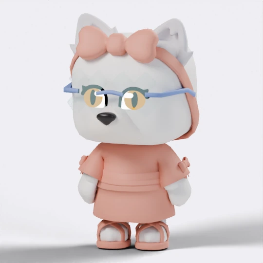
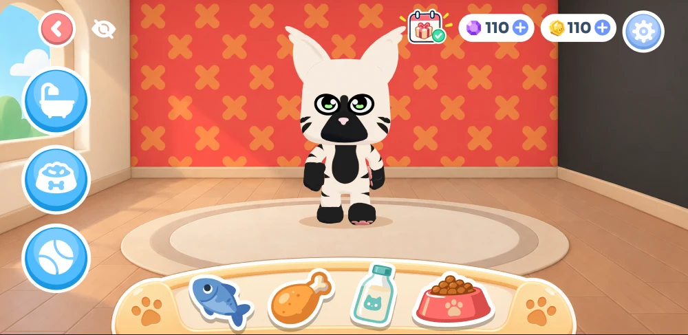

Personaje y animación
Una mascota que se puede armar y mover
El cuerpo y la cabeza pasaron de pruebas de forma a un esqueleto que admite piezas intercambiables. En junio ya había acciones para sentarse, dormir e interactuar con muebles.


Habitaciones
El mobiliario de Yunipets
Mayo aportó unos 60 muebles básicos y junio añadió otros 60. Los puntos de apoyo permiten colocar objetos encima de otros. En octubre, la mayoría de las piezas básicas ya tenía seis acabados.


Vestuario
Ocho conjuntos modelados
Seis conjuntos principales y dos extra recibieron geometría, coordenadas de textura y pesos para seguir el movimiento del personaje. El registro de septiembre dejó como siguiente paso texturizarlos y probarlos en Unity.
Tienda y arcade
Una tienda en Unity y dos minijuegos de demo
El equipo exploró cuatro distribuciones, desarrolló dos tiendas y llevó la tienda ortográfica a Unity. Globos y escalada ya tenían pantallas para la demo. El registro de julio aún dejaba pendientes los personajes finales de la tienda.
Pesca
Del mapa de islas a la ficha del pez
El álbum reunió ilustración, nombre y ficha por especie. La propuesta de mapa distingue las islas disponibles de las bloqueadas. La lista final de peces por isla quedó para validación con desarrollo.


Cuidado y exploración
La rutina de la mascota
PetCare reunió comida, baño y juego en una propuesta de interfaz. Las primeras plantas sirvieron para estudiar el entorno. El tablero de exploración y los consumibles aparecen en la planeación posterior a octubre.